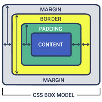
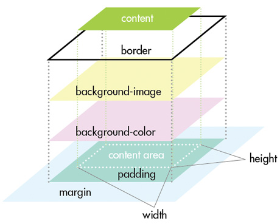

ボックスモデル

- プロンプト例
CSSのボックスモデルを詳しく解説して
- CSSのボックスモデル（Box Model）は、Webレイアウトの基礎となる超重要概念です。
- しっかり理解すると、レイアウト崩れの原因が一気に分かるようになります。
CSS ボックスモデルとは？
- HTMLのすべての要素は、長方形の箱（ボックス）として扱われます。
- この箱の構造を定義したものが ボックスモデル です。
- ボックスモデルは、立体的に捉えると理解しやすい

- 空間（余白）
- 背景（色→画像）
- 枠線
- コンテンツ（文字）
の順に記述していくと、破綻しにくい記述が可能です
① margin（外側余白）
- 他要素との距離
div { margin: 20px; }
→ 要素と要素の距離
② padding（内側余白）
- 内容と枠線の間の余白
- 文字を読みやすくする役割
div { padding: 10px 20px 30px 40px; /* 上 右 下 左 */ }
③ border（枠線）
- 境界線
div { border: 2px solid black; }
→ paddingの外側に枠線が付く
④ content（内容）
- テキスト・画像など、実際の中身
div { width: 200px; height: 100px; }
→ この width / height は content のサイズ
実サイズの計算（超重要）
.box { width: 200px; padding: 20px; border: 5px solid black; margin: 10px; }
実際に占有するサイズ
| 要素 | 横幅 |
|---|---|
| content | 200px |
| padding | 20 × 2 = 40px |
| border | 5 × 2 = 10px |
| 合計 | 250px |
- margin含めると → 270px
👉 これが レイアウト崩れ最大の原因
box-sizing の違い（最重要）
CSSには サイズ計算方法を変えるプロパティ があります。
デフォルト：content-box
box-sizing: content-box;
width = contentのみ
→ padding + border でサイズが増える
推奨：border-box
box-sizing: border-box;
width = content + padding + border
【例】
.box { width: 200px; padding: 20px; border: 5px solid; box-sizing: border-box; }
👉 実サイズは200pxのまま！
実務ではこれがほぼ必須
* { box-sizing: border-box; }
または
*, *::before, *::after { box-sizing: border-box; }
👉️ レイアウト計算が直感的になる
marginの相殺（margin collapse）
以下の場合、上下マージンが合体します
【html】
<h1>見出し</h1> <p>文章</p>
【css】
h1 { margin-bottom: 40px; } p { margin-top: 30px; }
→ 合計 70px にならず、40px だけになる
👉 大きい方が優先
⚠️ 起きる条件：
- 縦方向のみ
- ブロック要素のみ
図で理解する実例
div { width: 300px; padding: 20px; border: 5px solid red; margin: 30px; }
margin: 30 ┌─────────────────────────────┐ │ border:5 │ │ ┌───────────────────────┐ │ │ │ padding:20 │ │ │ │ ┌─────────────────┐ │ │ │ │ │ content:300 │ │ │ │ │ └─────────────────┘ │ │ │ └───────────────────────┘ │ └─────────────────────────────┘
よくあるバグ原因TOP3
① width超過で横スクロール
→ box-sizing: border-box; で解決
② marginが効かない
→ インライン要素（spanなど）には上下marginが効かない
span { margin-top: 20px; /* 効かない */ }
→ display: inline-block に変更
③ margin collapse の誤解
→ padding or border を親に入れると防げる
.parent { padding: 1px; }
Flexbox / Grid とボックスモデルの関係
Flexbox・Gridでも 各要素は必ずボックスモデルで計算
→ つまり ボックスモデル理解 ＝ CSS理解
まとめ（ここだけ覚えればOK）
| 項目 | 覚えること |
|---|---|
| 構造 | content → padding → border → margin |
| 実サイズ | width + padding + border |
| 推奨設定 | box-sizing: border-box |
| 罠 | margin collapse |